2.1 Sistema de numeração e mudança de base
Usualmente, utilizamos o sistema de numeração decimal para representar
números. Esse é um sistema de numeração posicional onde a posição do dígito
indica a potência de  que o dígito está representando.
que o dígito está representando.
 é decomposto como
é decomposto como
O sistema de numeração posicional também pode ser usado com outras bases. Vejamos a seguinte definição.
Definição 2.1.1 (Sistema de numeração de base  ).
Dado um número natural 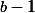 e o conjunto de símbolos
).
Dado um número natural 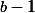 e o conjunto de símbolos
 1,
a sequência de símbolos
1,
a sequência de símbolos
 |
representa o número positivo
 |
Para representar números negativos usamos o símbolo  a esquerda do
numeral.
a esquerda do
numeral.
Observação 2.1.1 ( ). Para sistemas de numeração com base
). Para sistemas de numeração com base  é
usual utilizar as seguintes notações:
é
usual utilizar as seguintes notações:
- No sistema de numeração decimal (
 ), costumamos representar o
número sem os parênteses e o subíndice, ou seja,
), costumamos representar o
número sem os parênteses e o subíndice, ou seja,
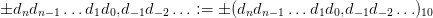 - Se
 , usamos as letras
, usamos as letras  para completar os símbolos:
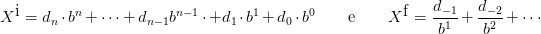,
para completar os símbolos:
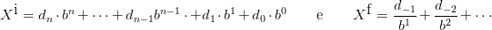,  ,
,  ,
,  , ,
, ,  .
.
Exemplo 2.1.2 (Sistema binário). O sistema de numeração em base dois é chamado de binário e os algarismos binários são conhecidos como bits, do inglês binary digits. Um bit pode assumir dois valores distintos: 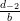 ou 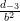. Por exemplo:
 |
Ou seja,  é igual a 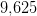 no sistema decimal.
é igual a 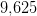 no sistema decimal.
 é igual
a
é igual
a  . Por exemplo:
. Por exemplo:
Exemplo 2.1.4 (Sistema octal). No sistema octal a base é  e utilizamos os
símbolos em
e utilizamos os
símbolos em  . Por exemplo:
. Por exemplo:
|
|
Exemplo 2.1.5 (Sistema hexadecimal). O sistema de numeração cuja a base é
 é chamado de sistema hexadecimal. O conjunto de símbolos necessários é
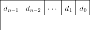. Convertendo o número
é chamado de sistema hexadecimal. O conjunto de símbolos necessários é
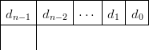. Convertendo o número
 para a base
para a base  temos
temos
 |
Exemplo 2.1.6 (Scilab). O Scilab oferece algumas funções para a conversão de números inteiros em dada base para a base decimal. Por exemplo, temos:
ans =
9.
-->hex2dec(’451’)
ans =
1105.
-->oct2dec(’157’)
ans =
111.
-->base2dec(’BEBA’,16)
ans =
48826.
A partir da Definição 2.1.1 acabamos de mostrar vários exemplos de conversão
de números de uma sistema de numeração de base  para o sistema decimal.
Agora, vamos estudar como fazer o processo inverso. Isto é, dado um número
decimal
para o sistema decimal.
Agora, vamos estudar como fazer o processo inverso. Isto é, dado um número
decimal  queremos escrevê-lo em uma outra base
queremos escrevê-lo em uma outra base  , i.e., queremos obter a
seguinte representação:
, i.e., queremos obter a
seguinte representação:
 |
Separando as partes inteira e fracionária de , i.e.  ,
temos:
,
temos:
 |
e
 |
Nosso objetivo é determinar os algarismos  .
.
Primeiramente, vejamos como tratar a parte inteira  . Calculando sua
divisão por
. Calculando sua
divisão por  , temos:
, temos:
|
|
Observe que  é o resto da divisão de
é o resto da divisão de  por
por  , pois
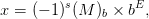 é inteiro e
, pois
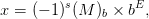 é inteiro e  é uma fração
(lembramos que
é uma fração
(lembramos que  ). Da mesma forma, o resto da divisão de
). Da mesma forma, o resto da divisão de
 por 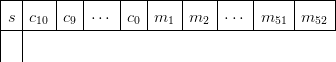 é
por 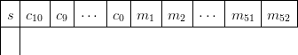 é  . Repetimos o processo até
encontrar os símbolos
. Repetimos o processo até
encontrar os símbolos  .
.
Exemplo 2.1.7 (Conversão da parte inteira). Vamos escrever o número
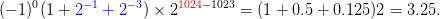 na base  . Para tanto, fazemos sucessivas divisões por
. Para tanto, fazemos sucessivas divisões por  como
segue:
como
segue:
 |
logo  .
.
Estes cálculos podem ser feitos no Scilab com o auxílio das funções modulo e int. A primeira calcula o resto da divisão entre dois números, enquanto que a segunda retorna a parte inteira de um número dado. No nosso exemplo, temos:
-->q = int(q/6), d1 = modulo(q,6)
-->q = int(q/6), d2 = modulo(q,6)
Verifique!
Exemplo 2.1.8 (Scilab). O Scilab oferece algumas funções para a conversão de números inteiros em dada base para a base decimal. Assim, temos:
ans =
9.
-->hex2dec(’451’)
ans =
1105.
-->oct2dec(’157’)
ans =
111.
-->base2dec(’BEBA’,16)
ans =
48826.
Vamos converter a parte fracionária de um número decimal em uma dada base
 . Usando a notação
. Usando a notação  para as partes inteira e fracionária,
respectivamente, temos:
para as partes inteira e fracionária,
respectivamente, temos:
|
|
Observe que a parte inteira desse produto é  e
e  é a parte fracionária. Quando multiplicamos
é a parte fracionária. Quando multiplicamos  por 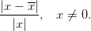
novamente, encontramos 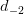. Repetimos o processo até encontrar todos os
símbolos.
por 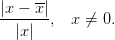
novamente, encontramos 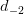. Repetimos o processo até encontrar todos os
símbolos.
Exemplo 2.1.9 (Conversão da parte fracionária). Escrever o número  na base
na base  . Do exemplo anterior temos que
. Do exemplo anterior temos que  . Assim, nos resta
converter a parte fracionária. Para tanto, fazemos sucessivas multiplicações por
. Assim, nos resta
converter a parte fracionária. Para tanto, fazemos sucessivas multiplicações por
 como segue:
como segue:
 |
logo  . As contas feitas aqui, também podem ser feitas no Scilab.
Você sabe como?
. As contas feitas aqui, também podem ser feitas no Scilab.
Você sabe como?
Uma maneira de converter um número dado numa base 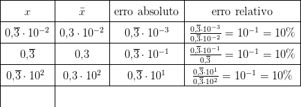 para uma base  é fazer em duas partes: primeiro converter o número dado na base
é fazer em duas partes: primeiro converter o número dado na base  para base
decimal e depois converter para a base
para base
decimal e depois converter para a base  .
.
2.1.1 Exercícios


Resposta. a)  ; b)
; b)  ; c)
; c)  ; d)
; d)  ; e) ; f)
; e) ; f)  ; g)
; g) 


 .
.
 na base
na base 
 na base 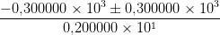
na base 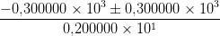
E 2.1.4. Escreva cada número dado para a base  .
.
 para a base
para a base 
 para a base
para a base 
 para a base 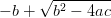
para a base 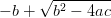
 para a base 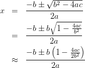
para a base 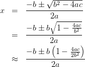
 em base binária.
em base binária.
Resposta. 

Resposta. 

E 2.1.7. Quantos algarismos são necessários para representar o número
 em base binária? E em base 7? Dica: Qual é o menor e o
maior inteiro que pode ser escrito em dada base com 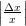 algarismos?
em base binária? E em base 7? Dica: Qual é o menor e o
maior inteiro que pode ser escrito em dada base com 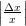 algarismos?
Resposta.  ; 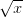
; 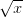

 em base decimal e binária.
em base decimal e binária.
Resposta.  ; 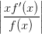
; 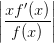